From your answers to the brainstorm: each biome is now a range on four dials, rolled for every planet with that biome's odds. Openness (open, outcrops, pillars, ridges, rocky rooms, caves), water (dry, pools, lakes, rivers with fords, streams), soil (plain, sand, dunes, barren bands, oases in barren, clay, cracked clay, mixed) and the crystal pattern (scattered, fields round a big crystal, veins, one jackpot, at the oases, richer toward the slime). The order runs open early and mazes late. Below, two seeds of each filmed in the game for two minutes with nobody playing, and three seeds of each as maps.
larder-world map=planet:6:42 (planet 6, seed 42). The map editor opens one too: larder-edit map=planet:6:42.Seeds 1 to 3 of planets 1 to 8, drawn straight from the map files in false colour so the layout reads apart from the shaders: rock light grey, sand tan, clay brown, barren grey-green, water blue, soft rock beige, crystals cyan, slime nests orange rings, the landing a white square. Each tile is labelled with the dials its planet rolled. Planets 1 and 2 are smaller maps drawn at the same width.
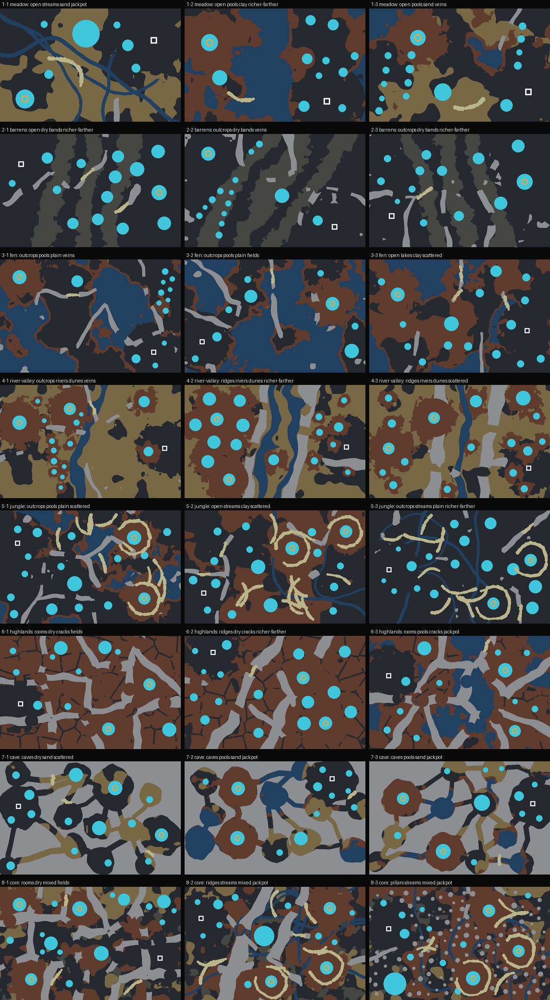
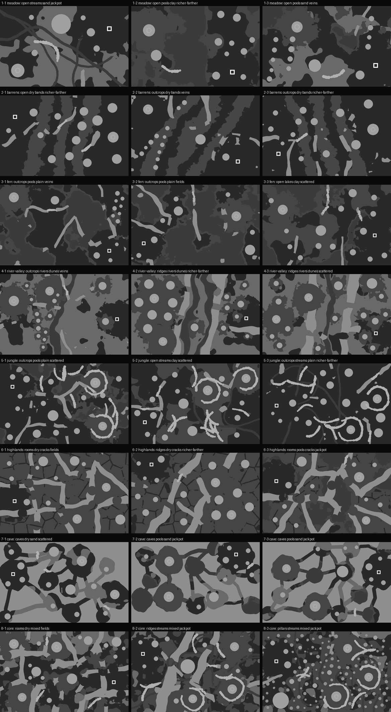
Open ground, a few outcrops or pillars; pools, a stream or dry; plain soil with some sand or clay; any crystal pattern. The slime's first planet: room to learn it.
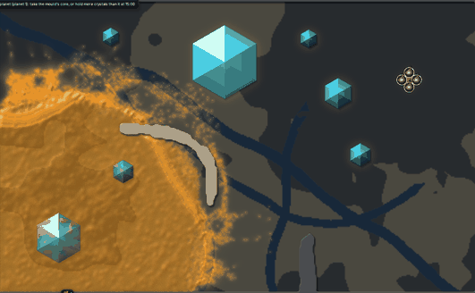
map=planet:1:1| Time | Slime walkers | Crystal charge left |
|---|---|---|
| 1 s | 25.0k | 100.0% |
| 60 s | 29.6k | 98.6% |
| 120 s | 27.7k | 96.7% |
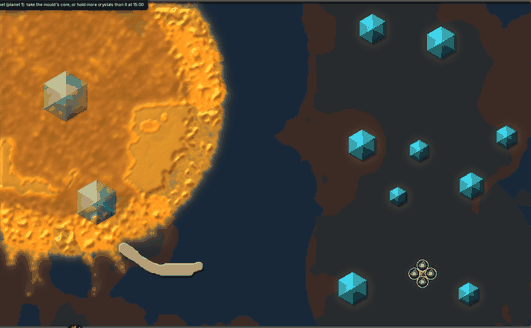
map=planet:1:2| Time | Slime walkers | Crystal charge left |
|---|---|---|
| 1 s | 25.0k | 100.0% |
| 60 s | 25.4k | 98.5% |
| 120 s | 20.9k | 97.0% |
Open or outcrops, always dry; either three barren bands across the route or barren everywhere but a few oases, where the crystals sit. Barren starves the slime: it crosses in thin lines, or holds the oases.
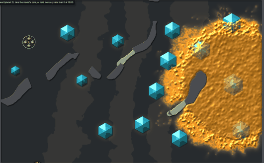
map=planet:2:1| Time | Slime walkers | Crystal charge left |
|---|---|---|
| 1 s | 25.0k | 100.0% |
| 60 s | 31.1k | 98.6% |
| 120 s | 41.9k | 96.5% |
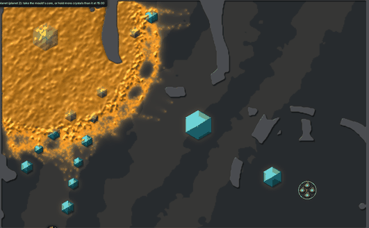
map=planet:2:2| Time | Slime walkers | Crystal charge left |
|---|---|---|
| 1 s | 25.0k | 100.0% |
| 60 s | 25.4k | 98.5% |
| 120 s | 27.2k | 96.4% |
Mostly open; big pools or lakes with a deep middle, on clay; crystals often in veins along the shore. Water slows the slime, clay holds it: a fight at the banks.
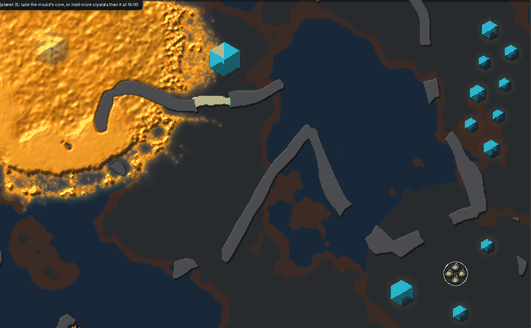
map=planet:3:1| Time | Slime walkers | Crystal charge left |
|---|---|---|
| 1 s | 25.0k | 100.0% |
| 60 s | 26.8k | 99.0% |
| 120 s | 17.8k | 97.8% |
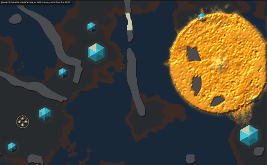
map=planet:3:2| Time | Slime walkers | Crystal charge left |
|---|---|---|
| 1 s | 25.0k | 100.0% |
| 60 s | 28.9k | 98.8% |
| 120 s | 25.7k | 97.4% |
Rivers right across the route, deep in the middle with one or two fords; sand dunes on the banks; ridges or outcrops. Fords are the chokes (deep water will stop soldiers once the ground thread lands it).
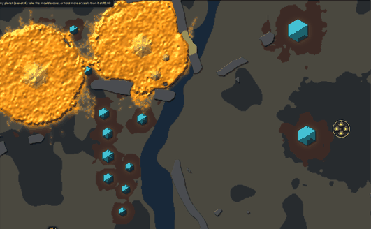
map=planet:4:1| Time | Slime walkers | Crystal charge left |
|---|---|---|
| 1 s | 25.0k | 100.0% |
| 60 s | 26.9k | 98.7% |
| 120 s | 31.5k | 97.2% |
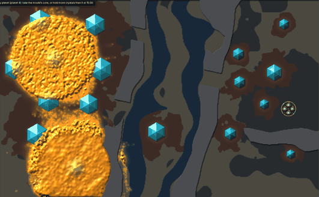
map=planet:4:2| Time | Slime walkers | Crystal charge left |
|---|---|---|
| 1 s | 25.0k | 100.0% |
| 60 s | 37.1k | 98.5% |
| 120 s | 47.9k | 96.5% |
Outcrops; streams or pools on clay; soft-rock hedges everywhere, rings round the nests, gated passes. Walls to chew or blast through; short sight lines.
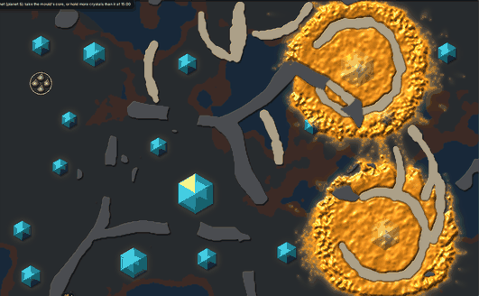
map=planet:5:1| Time | Slime walkers | Crystal charge left |
|---|---|---|
| 1 s | 25.0k | 100.0% |
| 60 s | 26.9k | 99.1% |
| 120 s | 26.7k | 97.9% |
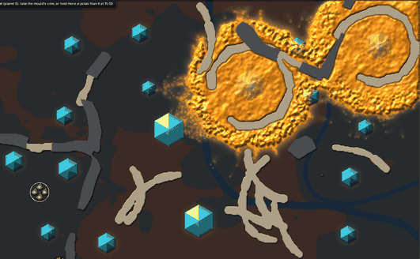
map=planet:5:2| Time | Slime walkers | Crystal charge left |
|---|---|---|
| 1 s | 25.0k | 100.0% |
| 60 s | 30.8k | 98.4% |
| 120 s | 36.3k | 96.2% |
Rocky rooms or long ridges, joined by passes, on cracked clay; mostly dry; fields of crystals or one jackpot. Rooms to hold and passes to wall: a builder's planet.
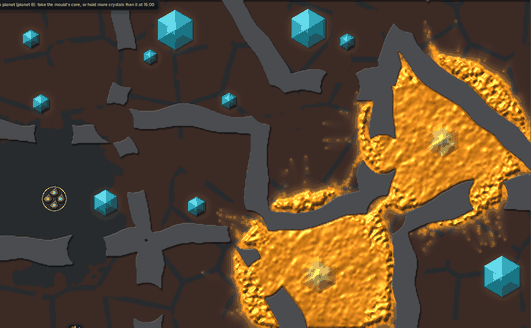
map=planet:6:1| Time | Slime walkers | Crystal charge left |
|---|---|---|
| 1 s | 25.0k | 100.0% |
| 60 s | 27.7k | 99.0% |
| 120 s | 32.8k | 97.3% |
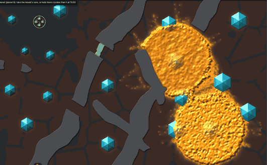
map=planet:6:2| Time | Slime walkers | Crystal charge left |
|---|---|---|
| 1 s | 25.0k | 100.0% |
| 60 s | 34.8k | 98.6% |
| 120 s | 45.4k | 96.9% |
Half the ground rock: caverns joined by tunnels; pools in some caverns; veins or a jackpot. Tunnels to hold, close fighting, the slime coming round the corner.
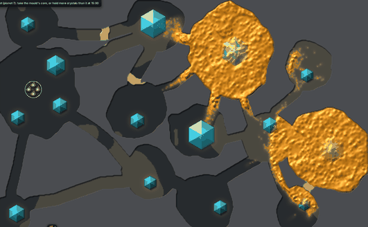
map=planet:7:1| Time | Slime walkers | Crystal charge left |
|---|---|---|
| 1 s | 25.0k | 100.0% |
| 60 s | 31.7k | 98.6% |
| 120 s | 39.3k | 96.8% |
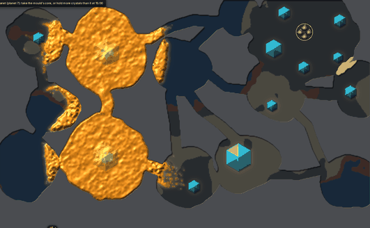
map=planet:7:2| Time | Slime walkers | Crystal charge left |
|---|---|---|
| 1 s | 25.0k | 100.0% |
| 60 s | 25.2k | 98.9% |
| 120 s | 27.1k | 97.4% |
Every dial at once, three nests, more regions, hedges and rings (no rings in rocky rooms). The slime's home world, the last of eight.
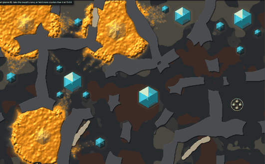
map=planet:8:1| Time | Slime walkers | Crystal charge left |
|---|---|---|
| 1 s | 25.0k | 100.0% |
| 60 s | 31.3k | 98.8% |
| 120 s | 42.4k | 97.3% |
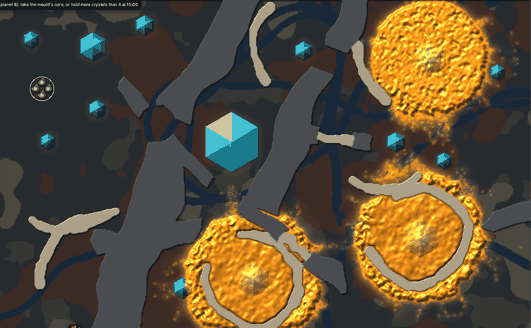
map=planet:8:2| Time | Slime walkers | Crystal charge left |
|---|---|---|
| 1 s | 25.0k | 100.0% |
| 60 s | 28.7k | 98.9% |
| 120 s | 31.3k | 97.4% |
A planet that fails a check is rebuilt from the next attempt: every crystal and slime nest reachable from the landing, a crystal close to the landing, the far nest across the map on foot, half the crystals' charge open without breaking soft rock. Over 400 planets (seeds 1-50, planets 1-8) all passed within four attempts, 354 on the first, in 75 ms each (median), once a level. Medians over 50 seeds, ranges in brackets, walks in map cells:
| Biome | Crystals | Rock | Sand | Clay | Barren | Wet | Soft-rock pieces | Walk to nearest nest | First attempt passes |
|---|---|---|---|---|---|---|---|---|---|
| --- | --- | --- | --- | --- | --- | --- | --- | --- | --- |
| Meadow | 11 (6-18) | 2% | 0% | 22% | 0% | 8% | 8 | 563 (488-632) | 45/50 |
| Barrens | 14 (9-20) | 5% | 0% | 5% | 51% | 0% | 0 | 676 (548-798) | 44/50 |
| Fen | 15 (6-22) | 3% | 0% | 35% | 0% | 26% | 0 | 781 (620-950) | 50/50 |
| River valley | 15 (10-22) | 10% | 37% | 29% | 0% | 5% | 0 | 595 (484-917) | 49/50 |
| Jungle | 17 (11-17) | 4% | 0% | 33% | 0% | 6% | 130 | 587 (486-796) | 47/50 |
| Highlands | 12 (11-17) | 16% | 0% | 57% | 0% | 0% | 4 | 654 (488-1052) | 42/50 |
| Cave | 11 (6-16) | 50% | 0% | 18% | 0% | 4% | 12 | 597 (490-909) | 44/50 |
| Core | 15 (10-21) | 9% | 12% | 34% | 4% | 5% | 82 | 536 (483-777) | 33/50 |